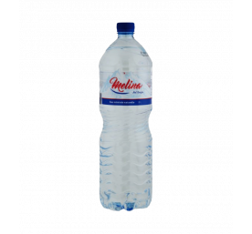

Prix de l'eau Melina en Tunisie
Bouteille et stika, mis à jour le 25 septembre 2026
L'eau Melina est vendue en 50 cl, 1,5 L et 2 L chez Aziza et Monoprix. La bouteille la moins chère coûte 0,420 DT (50 cl chez Monoprix). Une stika de 6 bouteilles de 1,5 L revient à 3,720 DT (6 × prix bouteille). Au litre, Melina 1,5 L est classée 8e sur 21 marques en 1,5 L.
| Format | Bouteille | Stika | Magasins |
|---|---|---|---|
| 50 cl 0,832 DT/L | 0,420 DT | 4,990 DT 12 bouteilles | Monoprix 0,420 DT · Aziza stika 4,990 DT |
| 1,5 L 0,413 DT/L | 0,620 DT | 3,720 DT* 6 bouteilles | Monoprix 0,620 DT |
| 2 L 0,395 DT/L | 0,790 DT | 4,740 DT* 6 bouteilles | Monoprix 0,790 DT |